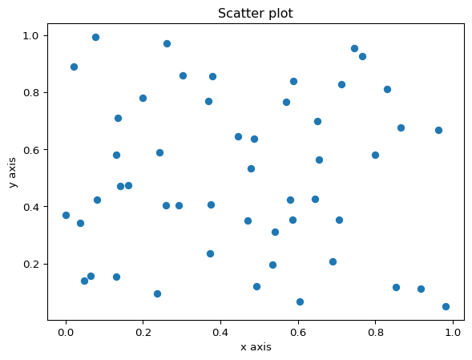
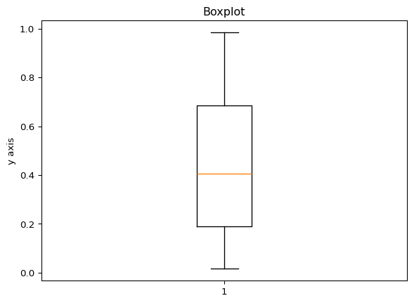
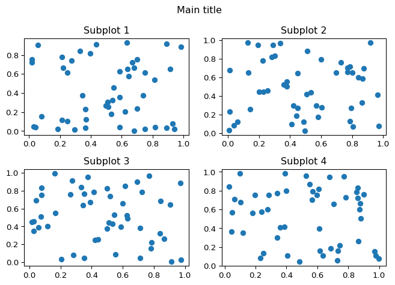

import matplotlib.pyplot as pltPlotting in Python

By the end of the lesson you will learn how to make simple plots using the matplotlib library
Learning objectives
- Basics of plotting
- How to scale and color
- Different types of plots
- Scatter plots
- Boxplots
- Histograms
- matplotlib axes
We’re going to use matplotlib to accomplish these learning objectives
What is matplotlib?
Matplotlib is a Python library used for visualizing data. The website: https://matplotlib.org/stable/users/index has a helpful user guide that contains documentation, information on how to get started (including package installation), an overview of plot types included in the library, and tutorials. If you are stuck or need help figuring out how to make the plot you have in mind, this website is a great place to start.
Most of the functions that people use from the matplotlib library are in the pyplot submodule and to make it easier to access those functions, it is usually imported as plt.
To start plotting, first let’s create a vector containing values from 0 to 100:
import numpy as np
x = np.arange(0, 100)plt.plot(x) #use plot to plot our values
plt.show() #to show the plot in the notebookIt assumed our single data list to be the y-values and in the absence of an x-values list, [0, 1, 2, 3, … 100] was used instead
y = np.arange(0, 1, 0.01)plt.plot(x, y)
plt.show()Now we are passing in two lists to plt.plot, which explicitly sets the x-values
NOTE: when you pass in two lists to plt.plot, their lengths must match. Here, our lists both contain 100 values
y1 = np.arange(0, 1, 0.01)
y2 = np.arange(2, 3, 0.01)plt.plot(x, y1)
plt.plot(x, y2)
plt.show()You can plot multiple curves on the same plot, but they have to be all the same length
Right now, it’s hard to tell by glancing which line belongs to which data. We can add labels and show a legend to make it easier to tell them apart
plt.plot(x, y1, label="plot 1")
plt.plot(x, y2, label="plot 2")
plt.legend()
plt.show()We can also add labels to the axes and a title
plt.plot(x, y1, label="plot 1")
plt.plot(x, y2, label="plot 2")
plt.xlabel("x axis")
plt.ylabel("y axis")
plt.title("This is a plot of two datasets")
plt.legend()
plt.show()You can also change the line type (using linestyle) and color (using color)
plt.plot(x, y1, linestyle=":", label="line 1") #include linestyle to change the appearance of the line
plt.plot(x, y2, color="red", label="line 2") #include color to change the line's color
plt.xlabel("x axis")
plt.ylabel("y axis")
plt.title("This is a plot of two datasets")
plt.legend()
plt.show()You can change the scaling of either axis by using either xlim or ylim
plt.plot(x, y1, linestyle=":", label="line 1")
plt.plot(x, y2, color="red", label="line 2")
plt.xlim(0, 60) #sets the lower and upper bound of the x axis
plt.ylim(0, 2.5) #sets the lower and upper bound of the y axis
plt.xlabel("x axis")
plt.ylabel("y axis")
plt.title("This is a plot of two datasets")
plt.legend()
plt.show()You can see that this is the same plot as above, except it’s more zoomed in because we changed the axes
Other types of plots in matplotlib
# Scatter plot
x = np.random.rand(50)
y = np.random.rand(50)
plt.scatter(x, y)
plt.xlabel("x axis")
plt.ylabel("y axis")
plt.title("Scatter plot")
plt.show()
# Boxplot
data = np.random.rand(50)
plt.boxplot(data)
plt.ylabel("y axis")
plt.title("Boxplot")
plt.show()
# Multiple boxplots
data1 = np.random.rand(50)
data2 = np.random.rand(50)
# Make a list of the two datasets
data = [data1, data2]
plt.boxplot(data)
plt.ylabel("y axis")
plt.title("Boxplots for two datasets")
plt.show()# Histogram
data = np.random.rand(100)
plt.hist(data, bins=10, facecolor='green', edgecolor='black')
#edgecolor outlines the edges of the bars with a certain color
plt.xlabel("x axis")
plt.ylabel("y axis")
plt.title("Histogram")
plt.show()Plotting multiple graphs in one figure
In matplotlib, there is a distinction between a “figure” and something called an “axes” object (see image below). The figure contains your plots and can be made up of more than one plot. Each plot is inside of the axes object. In all examples so far we’ve only had one plot so there was only one axes object inside of each figure. Think of the figure like a sheet of paper. We can draw multiple plots inside of boxes on the paper. The boxes represent the axes object.
Figure from: https://towardsdatascience.com/what-are-the-plt-and-ax-in-matplotlib-exactly-d2cf4bf164a9
In order to create a figure with multiple subplots dynamically, meaning you create the data for each plot at the same time you’re plotting, you can use a for loop:
num_rows = 2
num_cols = 2
count = 0
fig, axes = plt.subplots(num_rows, num_cols)
for row_num in range(num_rows):
for col_num in range(num_cols):
count += 1
ax = axes[row_num][col_num]
ax.scatter(np.random.rand(50), np.random.rand(50))
ax.set_title(f'Subplot {count}')
#set_title is used for an axes object, whereas a plt object uses just title
fig.suptitle('Main title')
fig.tight_layout()
plt.show()
#code adapted from above towardsdatascience link
The above example used iterative plotting to create and plot multiple plots in a for loop. However, if you have a set of plots already made that you want to include, you can use a different command called subplot. The format is plt.subplot(number of rows, number of columns, plot number)
plt.figure(figsize=(16, 12)) #to specify how big the figure should be in order to make it readable
plt.subplot(3, 1, 1)
x = np.random.rand(50)
y = np.random.rand(50)
plt.scatter(x, y)
plt.ylabel("y axis")
plt.title("Scatter plot")
plt.subplot(3, 1, 2)
data = np.random.rand(50)
plt.boxplot(data)
plt.ylabel("y axis")
plt.title("Boxplot")
plt.subplot(3, 1, 3)
data = np.random.rand(1000)
plt.hist(data, bins=10, facecolor='green')
plt.xlabel("x axis")
plt.ylabel("y axis")
plt.title("Histogram")
plt.show()
In class exercise
!pip install wget
import wgetCollecting wget
Downloading wget-3.2.zip (10 kB)
Installing build dependencies ... - \ done
Getting requirements to build wheel ... - done
Preparing metadata (pyproject.toml) ... - done
Building wheels for collected packages: wget
Building wheel for wget (pyproject.toml) ... - done
Created wheel for wget: filename=wget-3.2-py3-none-any.whl size=9685 sha256=ad4990c8ef0089243043b7a5d6c361e7b32582fd80815d1c46726e8c4fc16fdb
Stored in directory: /home/runner/.cache/pip/wheels/8a/b8/04/0c88fb22489b0c049bee4e977c5689c7fe597d6c4b0e7d0b6a
Successfully built wget
Installing collected packages: wget
Successfully installed wget-3.2#If running in colab, need to get the IRIS.csv file from github
wget.download('https://raw.githubusercontent.com/How-to-Learn-to-Code/python-class/master/Lesson_7_Plotting/IRIS.csv')'IRIS (1).csv'Read in the IRIS.csv dataset from the file you just downloaded
Dataset from: https://www.kaggle.com/datasets/arshid/iris-flower-dataset
Extract the petal_length and petal_width columns
Make a scatter plot of petal length vs width
Bonus: color the points based on species. (Hint: the scatter plot function has a c option to specify color)
Label the x axis “petal length” and the y axis “petal width”
Title the plot as “Iris flower petal length vs width”
If you colored by species, include a legend
Homework
If you want more practice there are a few basic exercises here. There is a built-in text editor for you to use and solutions are given.
If you want more challenging exercises you can try out the plotting exercise here. The company sales dataset they use is included for download on the page and it has you make a few plot types we didn’t cover. They also give solutions but you’ll have to use your own text editor (you could make a notebook in colab!).